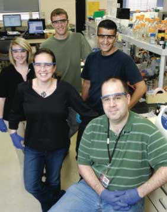

ABOVE: Biochemistry professors Carol Chrestensen (front left) and Jonathan McMurry (front right) in a lab with three undergrad researchers, Emily Rye (left), Josh Francis and Allan Johansen. Photo courtesy of Kennesaw State University.
Page last updated: June 13, 2013
By Aixa M. Pascual
In late April, dozens of students and professors crammed into the University Rooms at the Carmichael Student Center for what has become a rite of spring: the annual symposium featuring undergraduate research.
"It was a really exciting place to be. All of the students got to talk to a lot of people," says assistant professor of anthropology Susan Kirkpatrick Smith, who had seven students participating at the 15th Annual Symposium of Student Scholars. "I wonder where they're going to do it next year. It seems like they've outgrown that space."
The annual symposium has become a hot ticket as more and more KSU students take up research projects to enhance their undergraduate experience. The number of students presenting has more than doubled in the past three years.
This year, a record 138 undergraduate students participated in the symposium, up from 82 students last year; the number of faculty mentors rose from 40 in 2009 to 54 in 2010. More KSU undergrads also are getting recognition for their research, including two students who were invited to present at an international conference this summer.
"I'm seeing a lot of students going to national conferences," says Amy Buddie, the faculty fellow for advancing undergraduate research for KSU's Center for Excellence in Teaching and Learning, which funds undergraduate research and creative activities across the university. "Students are increasingly publishing their work, which we didn't see very much of five years ago."
Several factors are driving the surge in research among undergrads. Faculty are encouraging students to engage in these projects, even making original research mandatory in some courses. Also, more funds have become available to fund undergraduate research. In 2007, CETL, with funds from the Office of the Provost, started offering awards for undergraduate research — to both professors and students — and now awards $30,000 a year through various funding programs. Colleges and departments — the College of Science and Mathematics awards mentor-protégé grants of up to $2,000 for supplies and equipment and up to $1,200 in travel expenses for research projects involving collaboration between professors and students — are also providing financial support to undergraduates in their research endeavors. And, as KSU faculty become more successful at garnering external grants from prestigious sources such as the National Science Foundation, undergrads are poised to benefit too.
"Eight to 10 years ago many professors were doing research by themselves or they weren't doing research at all," says Buddie, an associate professor of psychology who cherishes mentoring student-researchers. "Now there is a growing interest in involving undergraduates in their research."
There is no research requirement for most KSU undergrads. But some choose to work one-on-one with a faculty mentor, for credit, in a research project of their liking. Others help out professors who are working on externally funded research in the lab or on the field. And yet some, like anthropology majors taking Smith's forensic anthropology class, are required to conduct original scholarly work. When she started teaching the class in 2005, she gave students the option of doing a research project. But one semester after she saw the high level of interest, Smith decided to make the research project mandatory for all students. Seven of her eight students in spring 2010 presented at the Symposium of Student Scholars in April, and she has taken a handful of students to Greece to assist her in her research on human skeletons.
Research enriches students' academic experiences by allowing them to solve real-world problems, says Marina Koether, CETL's faculty fellow for advancing undergraduate research from 2006 to 2008. "There's no textbook. There's no formula to follow; there's an unknown result. It's research," Koether says. "Students will make mistakes along the way and learn from them."
And the benefits of engaging in scholarly inquiry spill into other areas that are critical to academic success. "When students engage in undergraduate research, it is phenomenally effectivein promoting skills like critical thinking, writing, statistics and reading comprehension. It has big-time benefits," says Buddie.
Most of the 11 students who have done independent research in assistant professor of biochemistry Jonathan McMurry's labs have gone on to pursue research-related endeavors: three went on to competitive Ph.D. programs in biochemistry, three are in medical school and one is a researcher at Emory. McMurry says research opportunities — facilitated by the use of $300,000 in state-of-the-art biomolecular research instruments purchased with external grants — afford these students a competitive edge. "What they get here at KSU is a step-up to a research career," he says. "The teaching lab teaches students concepts. But research teaches students how new knowledge is discovered
Senior Nicholas Karonji, a computer science major, undertook a research project — on how immigrants in the U.S. adopt technology — after a friend encouraged him. Karonji, who wants to be an entrepreneur, ended up presenting his paper this summer at an academic conference at Harvard hosted by the International Journal of Arts & Sciences. The research, he says, enriched his academic experience.
"It opened my eyes," Karonji says. "There are more opportunities to advance yourself academically than students think."